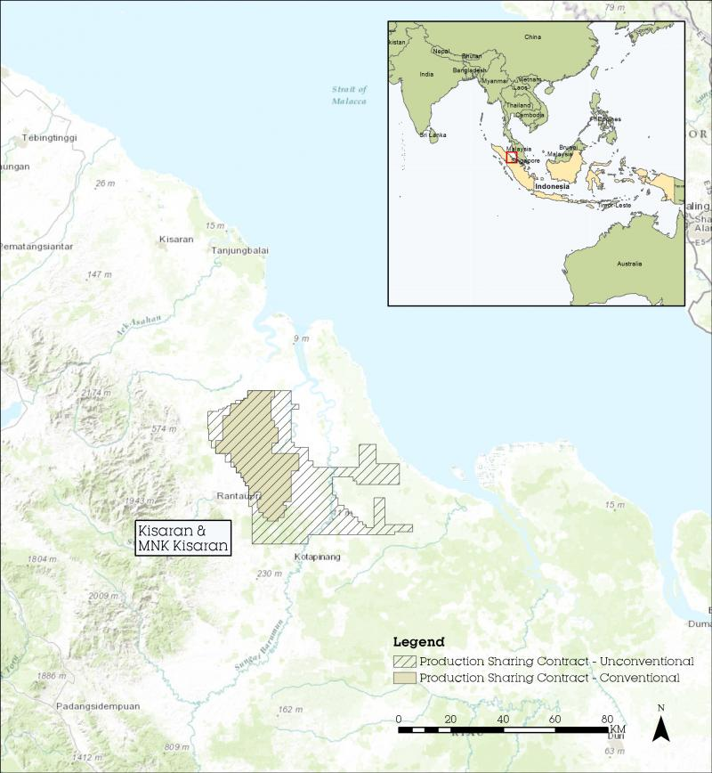

With elevated energy demand and good fiscal terms, the outlook for Indonesia is positive.
Production sharing contracts allows full cost recovery for exploration wells before reducing the company’s revenue share, so investment can be recovered even with modest production rates and a low oil price environment. Indonesia is one of South East Asia’s most energy hungry economies. This makes oil and gas exploration projects attractive.
Sumatra is particularly attractive because it has a large, well-connected infrastructure network and an energy-hungry population.
Indonesia – our community commitment
Our JV partnerships in Indonesia also make significant contributions to their local communities, often with a focus on improving local community health and education opportunities, and local infrastructure.
WHAT WE DO
- We work hard to ensure our values are reflected in the way we operate in our offshore activities.
- We ask questions of our joint venture partners in Indonesia.
- We take an active interest in the community engagement and community investment plans for each project we are involved with.
COMMUNITY INVESTMENT
Like exploration and production, community investment may take years to activate.
Community investment plans are developed following detailed local engagement including meeting with Kepala Desa (the local village head), and require final approval from the local Regency (local government).
Through this engagement, affected communities’ social and environmental priorities are identified, such as providing clean water supplies to a village, or renovating local schools

Kisaran

| 22.5 % | New Zealand Oil & Gas |
| 55 % | Pacific Oil & Gas (Operator) |
| 22.5 % | Bukit Energy |
Project Status: Development
Permit Overview
The Kisaran block is located in the Barumun trough in the northern part of the Central Sumatra Basin - the most prolific oil producing basin in South East Asia. Two wells were successfully drilled there, in the Parit Minyak prospect, in 2013. The Parit Minyak-2 and Parit Minyak-3 (PM-3) were the first wells New Zealand Oil & Gas was involved in drilling outside New Zealand and presented both gas and condensate during flow testing. A Plan of Development for the field was developed in 2014 which received government approval in May last year.
Kisaran News
Kisaran plan of development approved
Ministerial approval has been received for a Plan of Development of the Kisaran Production Sharing Contract in Sumatra, Indonesia, where New Zealand Oil & Gas has a 22.5 per cent interest.
Kisaran Exploration Well weekly progress report 21st October
As previously reported, gas and condensate flowed to the surface during drill stem testing of the first zone at the Parit Minyak-3 (PM-3) exploration well, located in the Kisaran PSC in onshore Sumatra, Indonesia.
Hydrocarbons flowing at Kisaran PM-3
Gas and condensate flowed to the surface during drill stem testing of the first zone at the Parit Minyak-3 (PM-3) exploration well, located in the Kisaran PSC in onshore Sumatra, Indonesia.
Kisaran Exploration Well weekly progress report 7th October
The first open hole Drill Stem Test (DST) has been completed over a gross interval of 246 feet in the Parit Minyak-3 (PM-3) well located in the Kisaran PSC in onshore Sumatra, Indonesia.
Kisaran Exploration Well weekly progress report 30th September
Preparations are underway to begin flow testing in the Parit Minyak-3 (PM-3) well located in the Kisaran PSC in onshore Sumatra, Indonesia.
Kisaran Exploration Well weekly progress report 23rd September
At 2.00PM Sunday, 22 September (local time), a total depth (TD) of 8760 feet (2670 metres) was reached in the Parit Minyak-3 (PM-3) well located in the Kisaran PSC in onshore Sumatra, Indonesia.
Kisaran Exploration Well progress report 16th September
At Sunday, 15 September, seven inch casing had been run and cemented at the Parit Minyak-3 (PM-3) well, located in the Kisaran PSC in onshore Sumatra, Indonesia. The current operation is continuing drilling to 9000 ft using a 5 7/8" inch bit.
Kisaran Exploration Well weekly progress report 9th September
At Sunday, 8 September, seven inch casing had been run and cemented at the Parit Minyak-3 (PM-3) well, located in the Kisaran PSC in onshore Sumatra, Indonesia.
Kisaran Exploration Well weekly progress report 2nd September
At the Parit Minyak-3 (PM-3) well, located in the Kisaran PSC in onshore Sumatra, Indonesia, an 8 ½ inch hole had been drilled to a depth of 8520 feet (2598 metres), as of Sunday, 1 September.
Kisaran Exploration Well weekly progress report 27th August
Update on drilling at two wells in Sumatra
Kisaran Exploration Well weekly progress report 19th August
The Parit Minyak-3 (PM-3) located in the Kisaran PSC in onshore Sumatra, Indonesia spudded on 3 August. The current operation is running 9 5/8 inch casing to 5072 feet (1546 metres).
Kisaran Exploration Well weekly progress report 12th August
The Parit Minyak-3 well spudded on 3 August and has been drilled to 1670 feet.
Drilling resumes at Kisaran
Drilling is underway at exploration well Parit Minyak-3 (PM-3) located in onshore Sumatra, Indonesia. The well was spudded at 6.00PM Saturday night local time.
Operator provides Kisaran update
The operator of the Kisaran Production Sharing Contract in onshore North Sumatera has received approval from the Indonesian regulator to provide the following update
Kisaran rig moves to new well site
The rig used to drill the Parit Minyak-2 (PM-2) exploration well, located in the Kisaran PSC in onshore Sumatra, is being moved to the Parit Minyak-3 (PM-3) drill site.
Flow testing continues at Kisaran
Flow testing is continuing at the Parit Minyak-2 (PM-2) exploration well, located in the Kisaran PSC in onshore Sumatra, Indonesia.
Flow Testing begins at Kisaran
Flow testing has begun at the Parit Minyak-2 (PM-2) exploration well, located in the Kisaran PSC in onshore Sumatra, Indonesia.
Drilling underway at Kisaran
Drilling is underway in onshore Sumatra, Indonesia.
Kisaran Exploration Well: Testing to Commence
Preparations are being made to begin flow testing at the Parit Minyak-2 (PM-2) exploration well, located in the Kisaran PSC in onshore Sumatra, Indonesia.
Kisaran Exploration Well weekly progress report 15th April
Target depth has been reached and the well is being readied for further assessment.
Kisaran Exploration Well weekly progress report 26th March
The well has been drilled to 8199 feet.
Kisaran Exploration Well weekly progress report 18th March
The well has been drilled to 6444 feet.
Kisaran Exploration Well weekly progress report 18th March
The well has been drilled to 200 feet (61m).
Kisaran Exploration Well weekly progress report 4th March
The well has been drilled to 4572 feet (1394m).
Kisaran Exploration Well weekly progress report 4th March
The well has been drilled to 4572 feet (1394m).